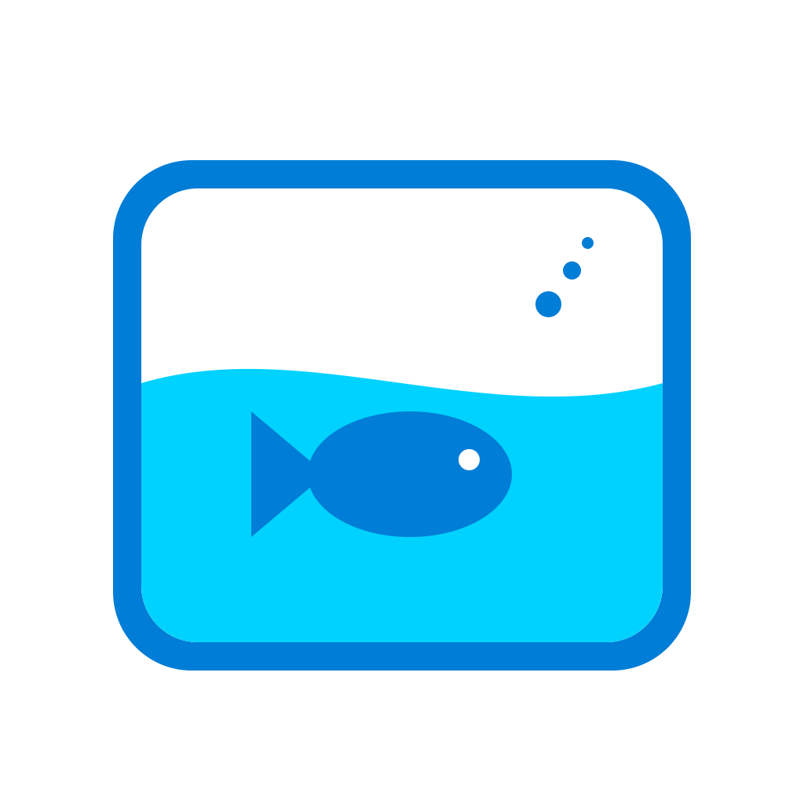

Assistance
Enregistrez vos boissons et consultez le total du jour et les sept derniers jours.
Vous choisissez cet objectif visuel. Ce n’est pas une quantité d’eau recommandée.

Aquarium à gorgéesEnregistrez vos boissons et consultez le total du jour et les sept derniers jours.